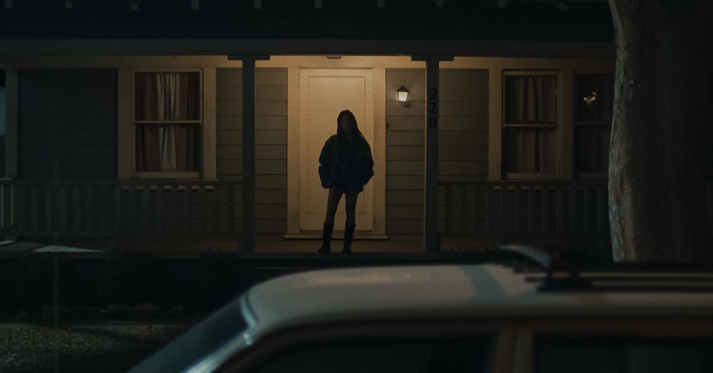

I went to see The Ring on its opening night in October 2002. I remember vividly how few people were in the audience. It had to be less than twenty. I don’t even think it was in the main auditorium. I was 14, on a double date. None of us knew that much about the movie. Just a very mysterious and disturbingly simple poster, something about a killer videotape, and a vague sense that it was a remake of something Japanese. It scared the hell out of us. None of us could sleep. It lingered like no other movie in recent memory.
We went back three weeks later. I remember because we’d originally tried to see 8 Mile on its opening night, November 8, but it was sold out. So we shuffled over to the downtown cinema in a quick decision to revisit The Ring. This time, in its fourth weekend, it had moved to the big auditorium, and it, too, was sold out. It was one of the rowdiest screenings I had ever been to.
In my mind, The Ring has one of the most memorable chains of weekend grosses. $15M, $18M, $18M, $15M. Its first four weekends were a palindrome. I love that. It’s also one of the few non-holiday films this century to see an increase from its first to second weekend, and then hold the way it did. I exclude holiday weekends because every movie goes up Christmas or Thanksgiving, so it’s not unique to any given film. That also applies to films like Mother’s Day (up 32.5% in its second weekend, which was Mother’s Day weekend) and Heart Eyes (up 19% in its second weekend, which was Valentine’s Day weekend).
21st-century movies don’t see upticks like that because the speed at which word spreads ensures that everyone knows about a film before opening weekend. So even if a film satisfies, the majority of its demographic has already seen it. Even Sinners and Crazy Rich Asians, two of the most notable holds in recent years, each fell 5–6% in their second frames.
It was far more common in the 1980s for popular movies to see small upticks in their second weekend (or third, or fourth, or tenth). Pretty Woman went up 10%. Beetlejuice went up 8%. E.T. and Risky Business went up 7%. The Terminator went up 5%. Lethal Weapon went up 4%. Information moved slower then, and awareness traveled at the speed of conversation. Marketing and distribution weren’t frontloaded — spend was scattered across the first few weeks of release. There was no advance aggregate score card like Rotten Tomatoes. Reviews trickled in. We get into this more in our analysis of Michael.
Given all this, Obsession has baffled the industry. Originally projected to open between $8 and $10 million (our prediction was more bullish at $16.2M), Obsession broke out with a $17.1 million opening last weekend. Impressive, but we’ve seen this happen a lot with horror. The genre has the best chance of any to exceed expectations. That opening put Obsession in the same camp as Longlegs ($22.4M opening) and Smile ($22.6M) — original horror films that surprised on debut.
But its second weekend numbers put it in a category by itself. We saw the signs during the week. It surged to the top spot on Monday, holding unusually well from Sunday to Monday. Smile fell 62% on its first Monday. Last year’s Weapons fell over 50%, even with all that word of mouth. Obsession fell 39%, and then it held steadily over the course of the week.
Going into this weekend, BoxOffice.com had Obsession going up against The Devil Wears Prada 2 in a toss-up for third place, predicting a delusional $7M–$10M for its second weekend. On any other occasion, that’d be a fair guess for a horror film’s second frame. We listened to the weekday numbers and figured it was in a race with Michael for #2, pegging it at $18.1 million, and we were still a ways off.
Obsession ended up with $23.9 million Fri–Sun, a 39% increase over its opening weekend. Not only is that more than The Ring’s 23% bump (although adjusted for inflation, The Ring still drew more people into theaters) — it is the biggest non-holiday second-weekend increase of all time, narrowly edging out Sound of Freedom, 2023’s child-trafficking thriller, which saw a similar jump of 38.6%. But Sound of Freedom’s pattern was partly engineered: Angel Studios let viewers buy extra tickets through its app to donate to others who couldn’t afford to attend, and those tickets were redeemed across subsequent weekends, lifting the second-weekend number. Sound of Freedom also added 413 theaters in its second weekend. The Ring, come to think of it, added 653. Obsession only added 40.
▶ Smallest Second Weekend Drops chart >>
So how do you explain Obsession?
First, a note on horror. In the past ten years, the genre has been canonized as not only a serious category, but perhaps the most resilient. A24 has given it prestige. Blumhouse has industrialized it. Halloween and It are opening like Marvel movies. And it’s winning Oscars. Just last year, Amy Madigan won Best Supporting Actress for playing the year’s most iconic horror villain. I wouldn’t be the slightest bit fazed if Inde Navarrette were nominated this year for Obsession. (Yes, we know horror is no stranger to the Oscars — The Silence of the Lambs, Jaws — and that horror has had its major box office moments before — the slasher craze of the late ’90s, The Blair Witch Project, The Sixth Sense, Paranormal Activity. But it feels like things are far less discriminating recently.)
But horror is also one of the few genres for new voices. It’s notoriously cheap to make. Obsession cost $1 million. On the higher end, Backrooms cost $10 million—still very low. You don’t need IP, a name actor, or a studio’s infrastructure. Meanwhile, the rest of the film industry has consolidated around finance to a point of no return. Even festivals, once the dependable breakout platforms, have shifted into managed events for established names, where distribution deals are increasingly arranged in advance. Horror is one of the few corners of cinema that young creators can still call their own. It’s no coincidence that the same forces driving the horror boom—the low cost of entry, the loosened gatekeeping—are what’s making YouTube and AI unstoppable as creative tools. These are the parts of the medium where things still arrive by surprise.
Obsession delivers the simplest incarnation of what horror has become. It is, very precisely, what Instagram thinks is hot and what Letterboxd thinks is good. And underneath that is the magic undercurrent of the internet, the electrical charge of YouTube. This year, we’ve already seen a YouTube fanbase translate lucratively to the big screen with Markiplier’s Iron Lung, which sidestepped any major studio involvement. This coming weekend, Backrooms arrives from YouTuber Kane Parsons. Danny and Michael Philippou (RackaRacka online) started as YouTubers and went on to make Talk to Me, one of A24’s biggest hits. Five Nights at Freddy’s has the same internet-native energy that prognosticators, after all this, still can’t seem to quantify.
It echoes a sentiment I wrote about in a 2014 blog post called Post-Christopher Nolan. I’d posed a fictional scenario set in 2023: a 34-year-old father takes his seven-year-old son to a Batman reboot. The father, Caleb, remembers going to The Dark Knight’s midnight premiere fifteen years earlier, when he was 19. The new theater is nearly sold out, but he feels alone throughout the movie. Leaving the theater, he tells his son, “I think I’m getting old. I didn’t know any of the stars in that movie.” Micah is confused: “Why would you know any of them?” Caleb says, “Because I should know who famous people are. I should keep up with culture.” Micah says, “Dad, relax. None of those people are famous.”
While my idea had more to do with the decline of stardom and the rise of IP, it applies to Obsession, Backrooms and Iron Lung. Fame is in the eye of the beholder. To traditional Hollywood, this kind of success—built on YouTube, Instagram, TikTok, and (in a way) Letterboxd—is pretty indecipherable. The fame is real. It just isn’t where Hollywood is looking.
We have a very interesting weekend ahead of us, with a variety of outcomes that depend on a series of factors.
The first is how steep a drop Star Wars takes. The Mandalorian and Grogu opened where we expected, and we expect a big fall.
The second is whether Obsession continues to hold. Was this second-weekend jump the peak, or the beginning of a longer run? We’ll know by Wednesday. We will point out that Obsession was the only film this past weekend to see an increase from Saturday to Sunday — unusual even for a holiday weekend and a small clue that it’s not done yet. If it can deliver another small drop, or another increase, it enters genuinely historic territory.
The third is Backrooms. Kane Parsons’s film arrives May 31 with a YouTube-native pedigree of its own. The question isn’t whether Backrooms breaks out (it almost certainly will) but whether Obsession’s continued strength helps or hurts. Same audience, same internet-native energy. Do the two stack, drawing in a wider audience that’s now paying attention to horror as the conversation of the moment? Or does Obsession absorb the demand Backrooms was counting on?
Will Obsession follow The Ring’s palindrome box office? Will it fall hard next weekend? Or will it continue to rise?
▶ Follow the Horror That Holds showdown >>
In other news, Michael continues to hold incredibly well, and we can’t help but applaud ourselves for calling The Passion of the Christ as its closest comp early on. Michael and The Passion of the Christ have found themselves in the exact same spot at the end of their fifth weekends with $315 million.